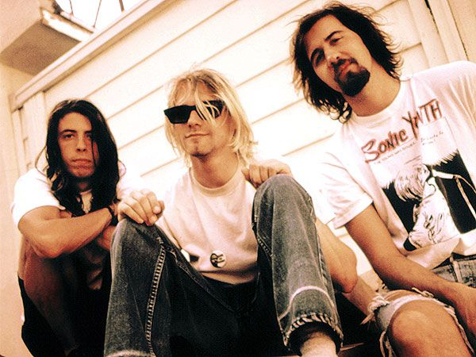
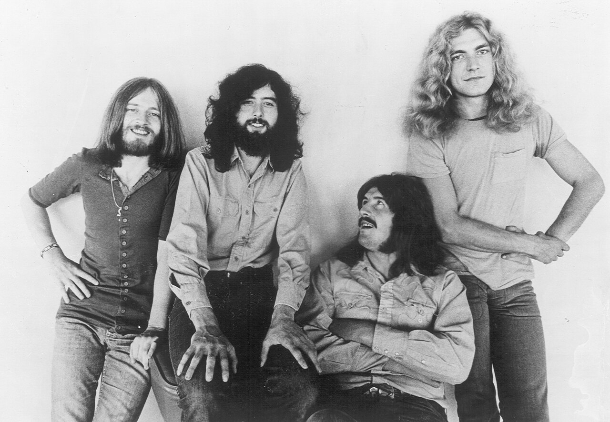
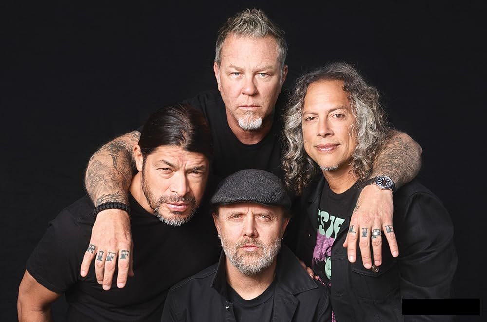
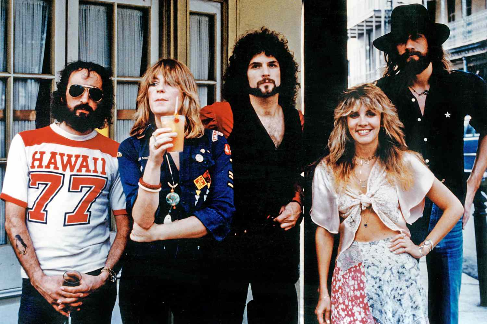

Legenda
Legenda
Classic Rock
Queen
Britansko rock čudo iz Londona. Od stadionskih himni do operske drame, Queen je redefinisao granice popularne muzike.
Enciklopedija rock & pop muzike
Katalog legendarnih muzičkih bendova — historija, diskografija i nasljeđe koje traje.
Prikazuje se 6 bendova
Legenda
Britansko rock čudo iz Londona. Od stadionskih himni do operske drame, Queen je redefinisao granice popularne muzike.

Grunge ikonaIz Aberdeena u Seattle, a zatim cijeli svijet. Nirvana je donijela grunge mainstream i zauvijek promijenila rock scenu.

LegendaUtemeljitelji hard rocka i heavy metala. Njihov zvuk — kombinacija bluesa, folka i sirovog rocka — neponovljiv je i danas.

BestsellerPioniri thrash metala koji su postali globalni fenomen. Od Kill 'Em All do Black Albuma — karijera bez premca.

Emotivne harmonije i karakteristični gitarski zvuk. Rumours iz 1977. ostaje jedan od najprodavanijih albuma ikad.
 Art Rock
Art Rock
Eksperimentalni art rock iz Oxforda. OK Computer i Kid A redefinisali su alternativni rock i elektronsku muziku.